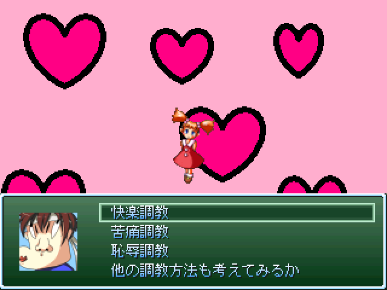

作品紹介
| ≪ Back | トップページ | 作品一覧 | Next ≫ |
| No021. - イツワリノアイ＆人という字 |

| 使用ツール：RPGツクール2000 |
| 作者：レモンそば |
| ジャンル：見るゲー |
| 動画・配信：見るゲー配信する人なんていないと思うが○ |
|
Ｑ.どういうゲームなの？ Ａ．茶でもすすりながらksgを見るゲームです Ｑ.話の展開とか動機とかが無茶苦茶なんだけど Ａ.すみませんすみませんすみませんすみませんすｍ Ｑ.ギャグが最高につまらないよ？ Ａ.おめでとうございます。あなたは正常です Ｑ.ぶっちゃけ面白いと言える？ Ａ.これを面白いと思えるほど馬鹿じゃない Ｑ.最初からセーブデータがあるけどこれなに？ Ａ.R18のウフフなオマケモードが展開…というわけではなく、 冒頭のオープニングが終わった状態から始められるセーブデータです とある事情で搭載する事になりました Ｑ.最後に一言 Ａ.レモンそばって現実にあったのかよ |
| 管理人コメント：で、味は？ |
| ダウンロード(0.6MB) ① ② / 感想掲示板 ツイート |
更新情報・お知らせ
- 2011/12/29
- 本体修正
- 2011/12/26
- パッチ追加
- 2011/12/01
- 提出
- 2011/12/01
- コメント変更
- 2011/11/02
- SS変更
- 2011/11/01
- エントリー